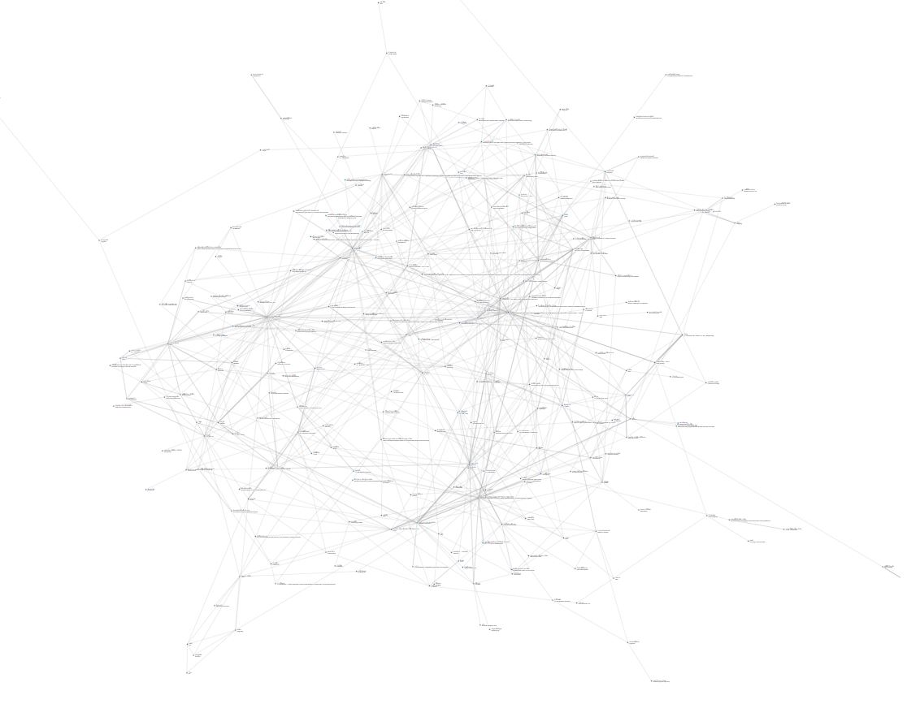

The Illustrated Manual of Buddhist Terms and Doctrines
The goal of this project is to explore the graph created by mapping the link of the book: A Manual of Buddhist Terms and Doctrines
Buddhist Dictionary: A Manual of Buddhist Terms and Doctrines By Nyanatiloka Thera
- https://www.buddhistelibrary.org/buddhism-online/e-books/palidictionary.pdf
- https://buddhistuniversity.net/content/reference/buddhist-dictionary_nyanatiloka
Online Version
Bonus
THE ILLUSTRATED HISTORY OF BUDDHISM by ASHIN JANAKA BHIVAMSA (Aggamahapandita) Artist: U Ba Kyi
https://saraniya.com/buddhism/buddhist-stories/the-illustrated-history-of-buddhism/